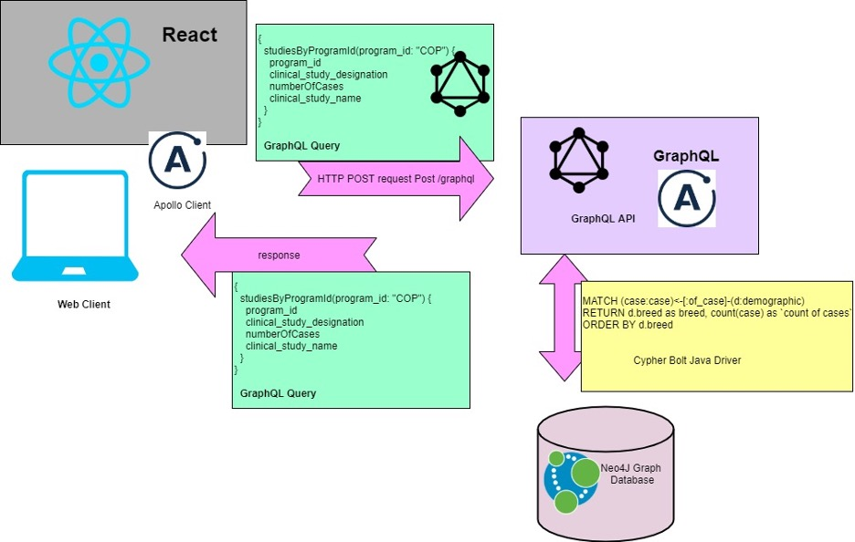
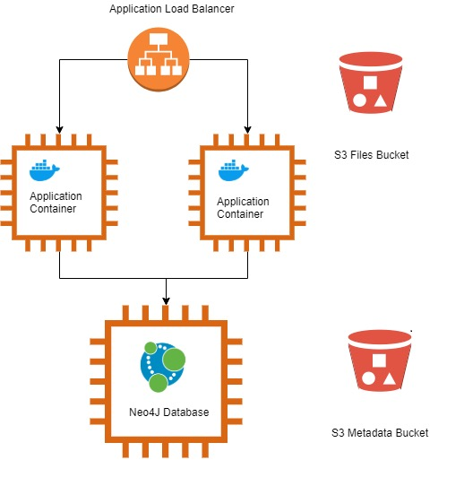
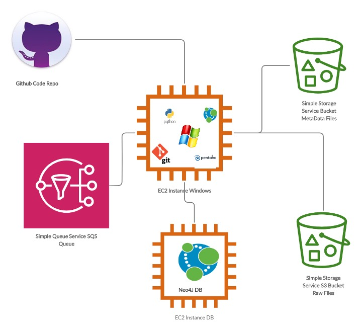
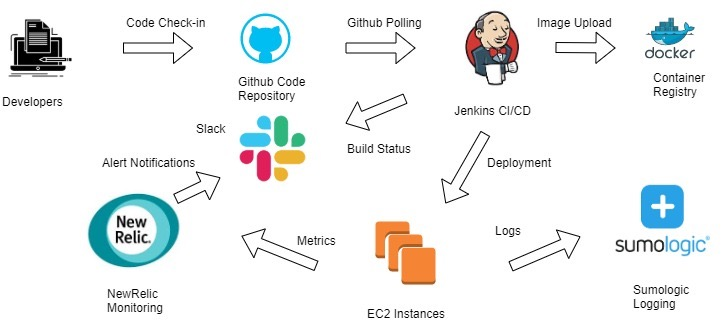
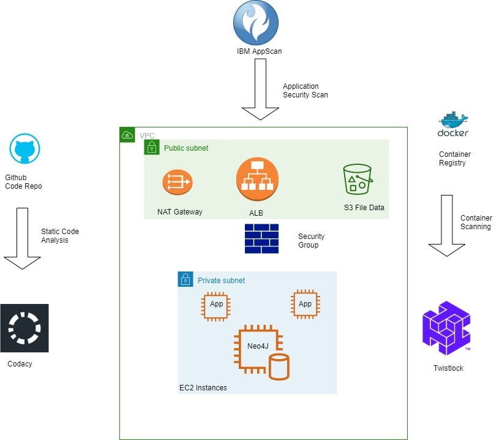
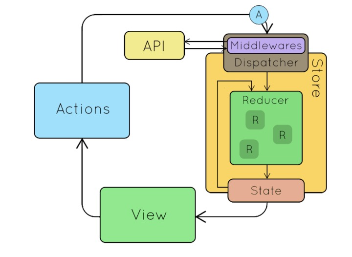
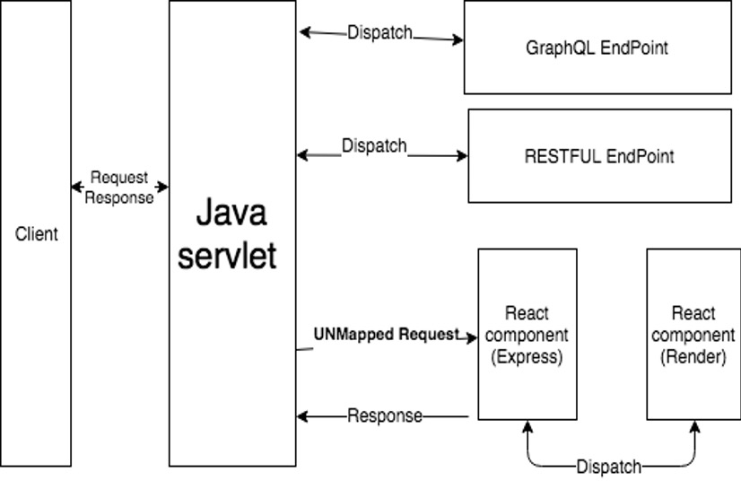
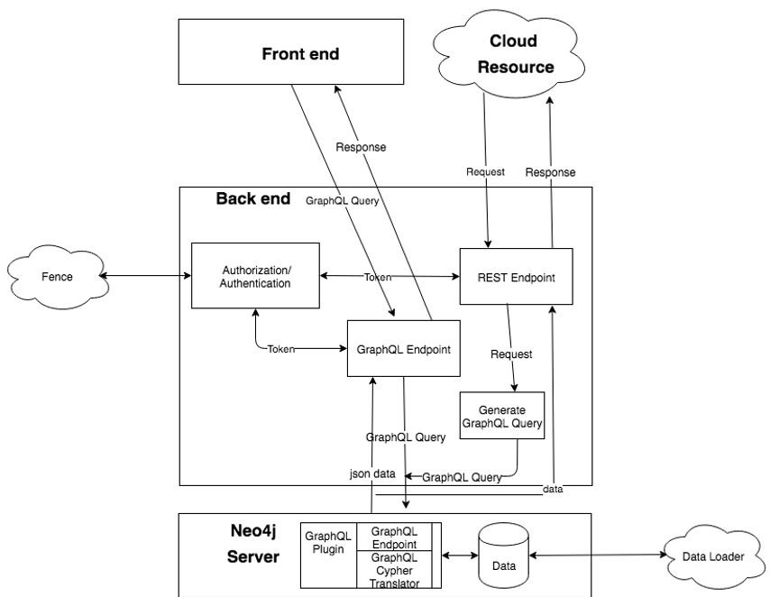
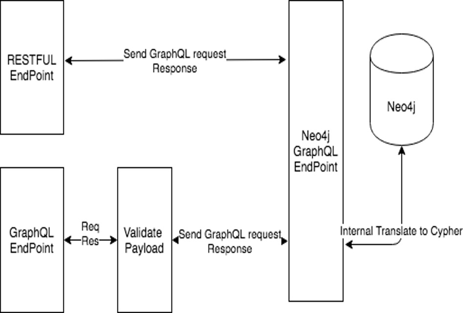

Overview¶
Bento is a software framework being built to support NCI’s Cancer Research Data Commons projects, including Integrated Canine Data Commons (ICDC), and Clinical Trial Data Commons (CTDC).
This site provides you with the background and instructions you need to set up your own data sharing platform using Bento.
Introduction¶
Bento is an open-source software framework for data sharing platforms that allow users to store, manage, share and analyze large-scale data according to the FAIR principles.
Bento is built on three organizing principles:
Bento is data agnostic. You can use Bento to develop data sharing platforms for data types of your choice. The framework is built to support the sharing of any kind of large scale biological data, be it next-generation sequencing, , proteomics, flow-cytometry or single-cell sequencing data sets.
Bento is modular. The Bento architecture separates the front-end code, back-end code and the underlying graph database into three separate modules. This modularity allows users to separately update each module. For example, the database model may be updated and the resulting database will work with the other modules to form a functioning application, or the front-end code may be updated to provide a different user interface, without modifying the back-end or database modules. We believe this modularity allows Bento-enabled data sharing platforms to be scaled up and out to keep pace with the platform custodian’s evolving needs.
Bento is cloud enabled. We have built Bento to be deployed on your on-premise servers as well as on the Amazon Web Services and Google Cloud platforms.
This data sharing platform was built as a reference implementation of Bento. You can explore it to better understand the capabilities of the framework.
Bento Architecture¶
System Architecture
The System Architecture is described in terms of 2 different ecosystem components. These 2 eco systems are
The Web/Database components.
The Transformation and DB Loading components.
Web and Database Components
The Bento ecosystems’ Web and Database components consist of two main parts, the Web Application Containers and the Database Server. The Web Application Containers consist of the Web Application which consists in turn of two main frameworks: Java, Graph API framework supporting the back end and the React Framework to power the User Interface as shown below:

The Front End uses the React Framework and sends GraphQL API requests to the backend Java Web Application. The request is then converted to a Cypher Query and a custom protocol over TCP (Bolt) is used to communicate with the Neo4J graph database. The response is converted into JSON and sent out to the requesting Clients. The supporting infrastructure is as shown below:

The Application/DB infrastructure for Bento hosted on Amazon Web Services (AWS) consists of an Application Load Balancer, 3 EC2 (Elastic Cloud Compute) Virtual Machines per environment (Development, QA, Staging and Production) and 2 Simple Storage Service (S3) buckets. The HTTPs requests from the User’s browser or a GraphQL client get routed to the appropriate ALB which forwards the request to the Application running on Docker Containers hosted on the EC2 instances. The Application in turn sends the request to the Neo4J graph database and upon receipt of the information, sends the response back in JSON format to the Client Application.
The graph database consists of Nodes and Relationships.The Metadata S3 bucket stores the Node and Relationships’ Metadata prior to being loaded into Neo4J. The File S3 bucket stores raw files (FastQ, Pathology Reports, Images etc.) with their URL paths amongst other attributes (MD5, UUID etc.) being stored as File Node Attributes in Neo4J. The details of the Database Loading and S3 File Loading will be described in a subsequent section. Additionally, information detailing the different environments and the DevOps Pipeline will also be covered in a subsequent section.
Transformation and Database Loading
The Transformation and DB ecosystem components are as shown below:

The goal of the Transformation and Loading steps are to do an ETL (Extract, Transform and Load) on the Comma Separated or Tab Separated Metadata files into the Neo4J Graph Database. The files are first stored on the S3 Metadata bucket with a ‘raw’ prefix and then run through a Transformation process and stored in the same Metadata bucket under a ‘Processed’ prefix using the Kettle/Spoon components of the Pentaho Business Intelligence Platform. The files from the ‘Processed’ prefix folder are then picked up by the Python Script and validated against a Data Model stored in this GitHub repository as well as business rules against the Neo4J DB. Once validated, the appropriate Nodes and Relationships are created by the Python Script and the ETL is deemed complete. For loading raw files e.g. BAM/FastQ etc., the files are loaded with a Pre-Manifest in a tar/zip format on the S3 Raw Files bucket on a per batch basis. This triggers a notification into the SQS queue and the Python Script which is polling the queue extracts the raw files, validates the Pre-Manifest, creates the appropriate file nodes and relationships in the DB and creates a final Manifest which is then sent to the IndexD service for file indexing which completes the File Ingestion process.
Bento Infrastructure and Operations
The Bento infrastructure has the following components as shown below.

The DevOps process starts with the developer team members checking in the code in the GitHub Repository. There is a Jenkins Server that polls the GitHub repository periodically every 5 minutes. When there is new code deployed on the Master branch of the codebase, it triggers a process where Jenkins pulls the new code from the repository and generates a new Docker Image. The Image is then tagged and uploaded to the container repository. Subsequently, the Jenkins job runs the code with the new container image on the EC2 instances and sends the build status to the appropriate Slack channel.
On the EC2 instances there are New Relic agents as well as Sumologic Agents running. The NewRelic Agent sends application and instance performance metrics to its Cloud and the Sumologic Agents send the log files for our application to the Sumologic Log aggregation platform. The NewRelic infrastructure is set up to generate alerts on specific events on Slack and Sumologic is used to troubleshoot application issues as they are found.
We have 4 environments which are the Development, QA, Staging and Production. Currently, the code is deployed in an automated fashion in the development environment and is manually deployed periodically in the rest of the environments.
Security Approach
The Security Strategy for Bento comprises of the following components as shown below:

Strategy for Bento security can be thought of in two ways i.e. Static and Dynamic. The Static Security Component focuses on the Code and the Container respectively. The Codacy Monitoring Platform is being utilized for monitoring Code Quality and Code Security. The platform continuously monitors the Github Code Repository and provides real-time feedback on vulnerable code sections or coding practices to along with real time trend metrics. This information is then utilized to address the vulnerabilities identified during the Sprint Cycle. The Twistlock Vulnerability Management tool monitors the Nessus Container Image repository and provides periodic reports which are then utilized to remedy the vulnerabilities identified.
The Dynamic Security components focuses on the deployed infrastructure and the application. IBM AppScan is utilized to periodically run vulnerability scans on the Bento Web Application. The vulnerabilities identified are then remedied in the current Sprint or added to the Sprint Backlog for future action depending upon the severity. The security of the network and instances utilize AWS recommended best practices. The access to the Web instances is allowed only via the ALB and on specific ports only using AWS Security Groups which act as an instance Firewall. Placing the ALB on a Public Subnet and instances on Private Subnets with a NAT (Network Address Translator) using Route Tables provides network level isolation for the instances keeping the virtual machines secure from malicious traffic while allowing them to get software updates as necessary.
Bento – Frontend Documentation¶
1-Technical Stack
- React
The JavaScript ecosystem is very dynamic. New tools and libraries pop up regularly, each one a little different from the rest, and the user has a wide selection to pick from. Frameworks are no exception. React has already hit the point of being mainstream and is used by a number of large companies including, of course, Facebook, but also Netflix, AirBNB, DropBox, IMDb, PayPal, Tesla Motors, Walmart and many others. Pretty good company to keep! There is a robust ecosystem to support it with tools, support, and experienced developers. And, of course, there is its Facebook parentage.
Major Benefits :
The Virtual DOM
This is the major thing we found out during our initial research, Normally, when we develop an app that has a lot of user interaction and data updates, we have to carefully consider how app structure is going to impact performance. Even with fast client platforms and JavaScript engines, extensive DOM manipulation can be a performance bottleneck and even result in an annoying user experience. Worse, because the DOM is tree-structured, simple changes at the top level can cause huge ripples to the user interface.
React solves this by using a virtual DOM. This is, as the name implies, a virtual representation of the DOM. Any new view changes are first performed on the virtual DOM, which lives in memory and not on your screen. An efficient algorithm then determines the changes made to the virtual DOM to identify the changes that need to be made to the real DOM. It then determines the most effective way to make these changes and then applies only those changes to the real DOM. This guarantees a minimum update time to the real DOM, providing higher performance and a cleaner user experience all around.
Reusable Components
Components are wonderful and React is based on them. We can start with small things, which can be used to build bigger things, which is used to build apps. Each component has its own logic and controls its own rendering and can be reused wherever we need them. Code re-use helps make apps easier to develop and easier to maintain. They also helps to implement a consistent look and feel across the whole project. Using components provides a large advantage in your development efforts.
Great Developer Tools
React is well covered in terms of design and debugging tools. React Developer Tools, available for Chrome and Firefox, is a browser extension for React. It allows to inspect the React component hierarchies in the virtual DOM. One can select individual components and examine and edit their current properties and state. One can also track the hierarchy of any component and discover both parent and child components.
1.2 - NPM (Node Package Manager)
npm is the package manager for the Node JavaScript platform. It puts modules in place so that node can find them and manages dependency conflicts intelligently. It is extremely configurable to support a wide variety of use cases. Most commonly, it is used to publish, discover, install, and develop node programs.
npm is configured to use npm, Inc.’s public registry at https://registry.npmjs.org by default. We can configure npm to use any compatible registry you like, and even run your own registry (which we might do in future).
Backend Query
Apollo Client is a complete state management library for JavaScript apps. Simply write a GraphQL query, and Apollo Client will take care of requesting and caching your data, as well as updating your UI. Fetching data with Apollo Client guides you to structure your code in a predictable, declarative way consistent with modern React best practices. With Apollo, you can build high-quality features faster without the hassle of writing data plumbing boilerplate.
2.1 - Sample Query
export const GET_STUDYTABLE_DATA_QUERY = gql`{
studiesByProgram {
program_id
clinical_study_designation
clinical_study_name
clinical_study_type
numberOfCases
}
}
`;
2.2 – Sample Query Call
const studiesContainer= () => (
<Query query={ studiesContainer}>
{({ data, loading, error }) => (
loading ? <Loading />: ( error || !data ? <Error />: <Studies data={data} /> )
)}
</Query>
);
Here is the Query is provided from react-apollo, When React mounts and renders a component that calls the useQuery hook, Apollo Client automatically executes the specified query
2.3 – Sample Response
{
"data": {
"studiesByProgram": [
{
"program_id": "COP",
"clinical_study_type": "Clinical Trial",
"numberOfCases": 84,
"clinical_study_designation": "COTC007B",
"clinical_study_name": "Preclinical Comparison of Three Indenoisoquinoline Candidates in Tumor-Bearing Dogs"
},
{
"program_id": "COP",
"clinical_study_type": "Transcriptomics",
"numberOfCases": 60,
"clinical_study_designation": "NCATS-COP01",
"clinical_study_name": "Models for Diagnosis and Treatment of Human Cancers Using Comparative Canine-Human Transcriptomics"
}
]
}
}
3 Redux
In an app where data is shared among components, it might be confusing to actually know where a state should live. Ideally, the data in a component should live in just one component. So sharing data among sibling components becomes difficult. The way Redux works is simple. There is a central store that holds the entire state of the application. Each component can access the stored state without having to send down props from one component to another.
Simply put, Redux is a state management tool. While it’s mostly used with React, it can be used with any other JavaScript framework or library. It is lightweight at 2KB (including dependencies), so developer don’t have to worry about it making your application’s asset size bigger. With Redux, the state of your application is kept in a store and each component can access any state that it needs from this store.

Redux is a state management system. Therefore, we will need:
Place to save the state
Store is a place where we save the state.
Method to get the state
getState is the method to get the state.
Method to change the state
action & reducer is the method to change the mapStateToProps. Redux update the state through action and reducer. The action tell reducer what it wants to do. Then the reducer updates the state base on the type and additional data provided by action
Bento – Backend & API Architecture Documentation¶
Backend & API Documentation General Overview

Bento has two layers: Front-end and Back-end. Front-end is written in React.js and back-end follows API design is coded in JAVA.
We put two layers together as a Java application.
The figure above shows how system works and how back-end response the request.
Client as an API consumer send a request, the JAVA servlet will capture the event and dispatch to the right endpoint.
Client requests a web page, the JAVA servlet will capture the event and redirect the request to the React Component, React.js use Express to handle the request and render the HTML to the client.
Back-end provides two types of APIs - GraphQL and REST for purposes.
Backend Architecture

Front-end and cloud resource will send the request to the backend.
Front-end uses GraphQL endpoint by sending the GraphQL query to the backend through POST method.
The benefit for using GraphQL: reduce the number of requests needed. Front end can send the GraphQL query which indicates what front-end need, the backend will compose the data and response to request by one shot.
Compare to the REST api, it may require many requests to get all kinds of data then compose in the front-end.
Too many requests will cause the performance issue. For the request from cloud resource, they may not familiar with GraphQL, so we provide the REST API for the cloud resource.
GraphQL API
The GraphQL query will be accepted by the GraphQL endpoint.
The backend will evaluate the request by checking the token and query.
Token validation is part of Authorization and authentication which go through the fence. The query checking is to validate if the query is accepted or not, currently we only check the type of query, only the “query” is allowed (read only), mutation is not permitted for now.
After validating the query and token, the GraphQL query will send to the Neo4j graphql endpoint, neo4j GraphQL plugin will translate GraphQL into Cypher and retrieve the data back to the client.
REST API :
When user send request to the REST API endpoint, REST API will take the value of parameters and compose it into a GraphQL Query. Then send it to the Neo4j graphql endpoint.
Backend Connection to Neo4j Database
The diagram below represents backend connection to Neo4j Database:

The connection to the database neo4j goes through Neo4j Graphql Endpoint. Neo4j has graphql plugin which will expose endpoint to consume the graphql request.
RESTFUL API will send the graphql request to the neo4j. GraphQL API will validate the payload, if is valid request then send the graphql request to the neo4j.
Bento Data Model¶
The Bento Core Data Model is a graphical data model that has been designed to address the data storage needs of clinical trials and research programs; it can be adapted to most data generation workflows. Graphical data models organize data in the form of a graph. The Bento Core Data Model models key components of a data generation workflow as nodes, and the relationships among them as edges. Both nodes and edges can store data in the form of properties. It is based on the Aggregated Data Model developed by the Center for Cancer Data Harmonization. The Aggregated Data Model synthesizes core concepts from three data sharing platforms- the Genomic Data Commons; the Proteomic Data Commons and the Integrated Canine Data Commmons. This model allows you to set up a minimal but functioning data sharing platform, where users can navigate from a selected clinical trial or program to a set of files of their choice.
Being schema-less, graphical data models can be easily extended, to include additional node and relationship types, without breaking the existing model. This feature allows you to expand the Bento Core Data Model to suit the evolving needs of your data sharing platform.
You can access the Bento Core Data Model here. We have extended the core data model to build the reference implementation; the extended BENTO_TAILORx data model can be found here.